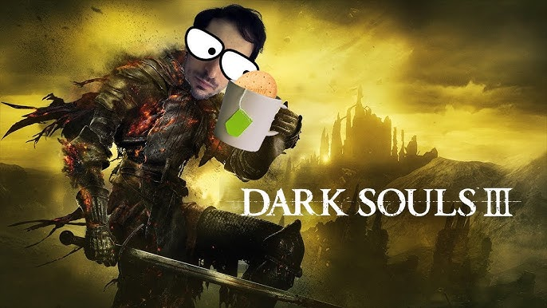
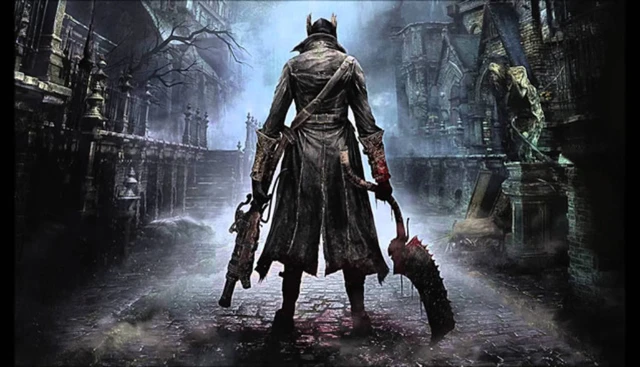

Xuất hiện streamer kỹ năng đạt "đỉnh cao đời người", phá đảo 7 game Soulslike chỉ với nhân vật level 1, nhận 0 damage
Thành tích của anh chàng streamer này gần như đã trở nên độc nhất vô nhị.
Các tựa game Soulslike luôn được biết tới như một trong những thử thách khó nhằn nhất với các game thủ cũng như streamer trên toàn thế giới.
Phá đảo các tựa game này tuy khó, nhưng cũng chưa tới mức là không thể khi có rất nhiều lối xây dựng, mẹo hay thủ thuật có thể khỏa lấp phần nào kỹ năng của người chơi. Thế nhưng để có thể đạt được những thành tích như anh chàng streamer trong câu chuyện dưới đây thì chắc chắn là chuyện xưa nay hiếm.
Nhân vật chính trong câu chuyện lần này là streamer Souls dinossindgeil, hay còn được gọi với cái tên quen thuộc là Nico.
Mới đây thôi, Nico đã khiến tất cả phải ngỡ ngàng trước thành tích vô tiền khoáng hậu của mình. Cụ thể, nam streamer này đã vượt qua mọi trò chơi Soulslike nổi tiếng với danh sách bao gồm 7 tựa game lần lượt là Dark Souls 1-3, Sekiro: Shadows Die Twice, Bloodborne, Elden Ring và Demons Souls mà không phải nhận bất kỳ sát thương nào từ tất cả các boss cũng như quái vật của những trò chơi kể trên.

Quan trọng hơn, Nico còn thực hiện các trò chơi này một cách liền mạch. Nhân vật của anh chàng cũng không hề được tăng cấp độ, giữ nguyên ở level 1 trong mọi trò. Trò chơi cuối cùng mà Nico thực hiện là Dark Souls 3 và ngay khi đánh bại boss cuối Soul of Cinder của trò chơi, nam streamer đã không giấu nổi cảm xúc khi thành công trong thử thách cực hạn này - thứ đã tiêu hao hơn 2 năm trời của nam streamer.
Quay trở lại năm 2022, Nico đã hoàn thành thử thách tương tự, tất nhiên là với sự trợ giúp của rất nhiều cấp độ và vật phẩm. Anh chàng streamer đã mất khoảng 120 ngày vào thời điểm đó. Còn giờ đây, kỹ năng của Nico dường như đã ở mức "đỉnh cao đời người" với các trò chơi Soulslike rồi.